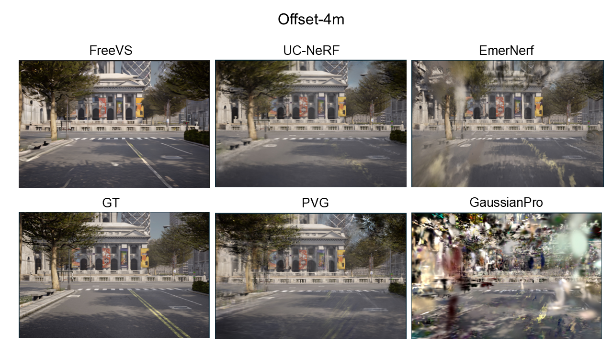
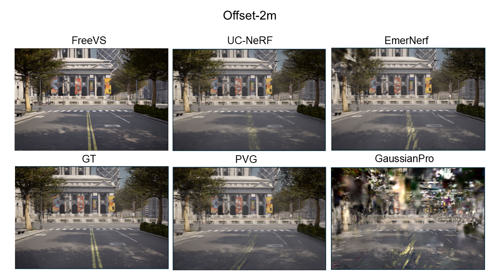
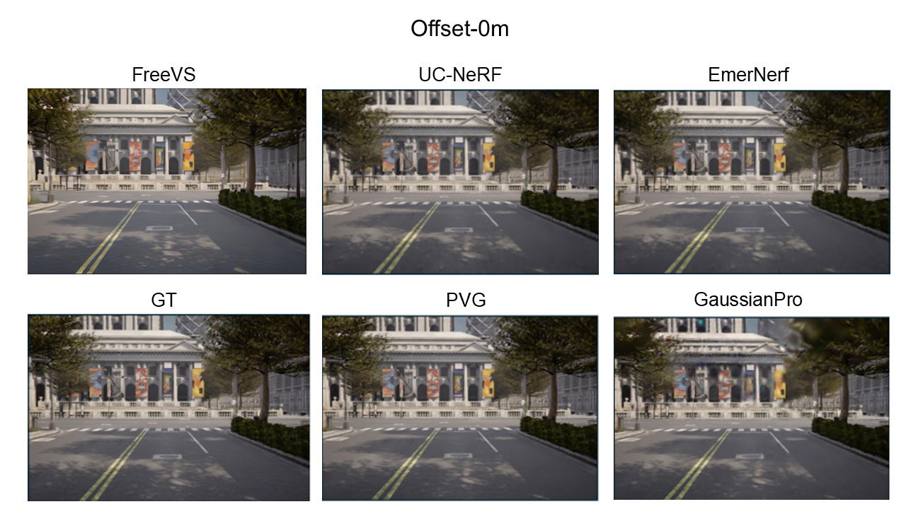
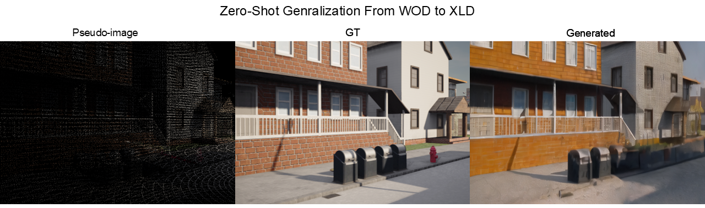
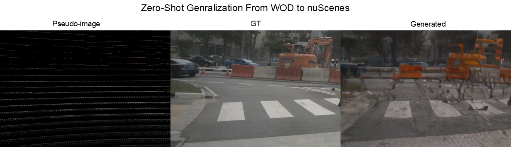

FreeVS: Generative View Synthesis on Free Driving Trajectory
Qualitative comparison on the XLD dataset



Video Demos on The XLD Dataset
Scene 1 (Offset 0m)
Scene 1 (Offset 2m)
Scene 1 (Offset 4m)
Scene 2 (Offset 0m)
Scene 2 (Offset 2m)
Scene 2 (Offset 4m)
Scene 3 (Offset 0m)
Scene 3 (Offset 2m)
Scene 3 (Offset 4m)
Zero-shot Generalization Cases

